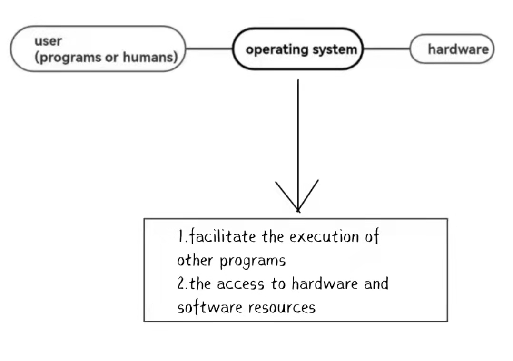
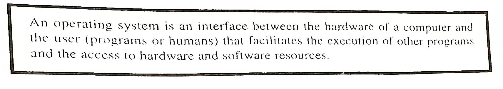
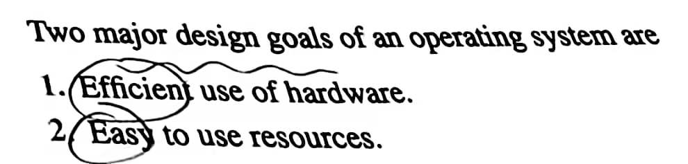
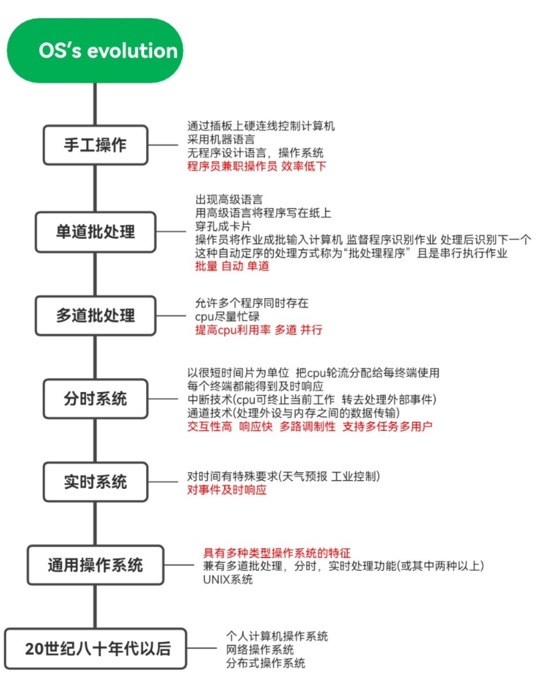
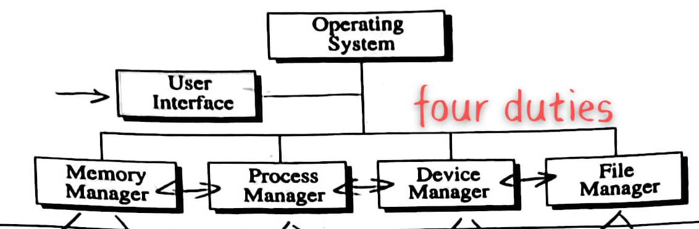

器官控制
Definition
  Evolution
Components
(1) Memory manager. It is mainly the allocation, protection, and expansion of memory.
(2) Process manager. It is mainly to manage the processor.
(3) Device manager. Management of all losers and output devices.
(4) File manager. It mainly involves the logical organization and physical organization of files, the structure and management of directories.
(5) Job manager. It is responsible for processing any requests submitted by the user.
What is the meaning of the operating system?
It's "convenience" for the average user and developer.
Printf ("hello world!");
Everyone has written it, why can such a line of code output a sentence on the screen? It's because after running this line of code, it's about calling the interface of the operating system, and then the operating system is going to control the underlying hardware for the related operations, which for us is senseless, just a line of code.
So my understanding of the operating system is: the operating system is the housekeeper, and the computer hardware is the big house, the user is the owner of the big house. For example, when we want to eat, tell the housekeeper can cook, and then the housekeeper to schedule, to arrange for people to buy food, cooking, and we just need to wait for the meal on the table on it. If there is no housekeeper, then all these things have to be done by themselves. So with the operating system, we can use the computer very comfortably and efficiently.